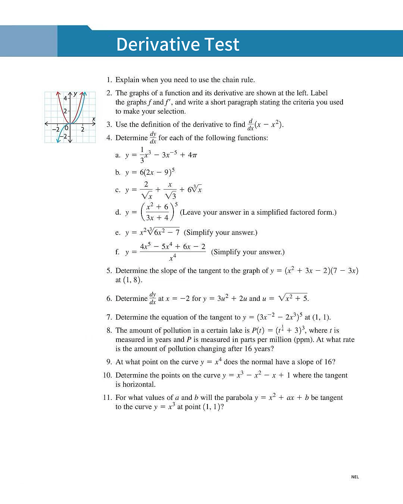

Comprehensive assessment on derivatives: definitions, rules, and applications
Total Questions: 11 | Click "Show Solution" to view detailed answers

Explain when you need to use the chain rule.
Answer:
The chain rule is used when differentiating a composite function, i.e., when the function is in the form y = f(g(x)).
It is required when one function is "inside" another (e.g., (2x − 9)5, ex2, sin(3x)), where you must differentiate the outer function first, then multiply by the derivative of the inner function.
The graphs of a function and its derivative are shown. Label the graphs f and f', and write a short paragraph stating the criteria you used to make your selection.
Answer:
• Labeling: The parabola (U-shaped curve) is f(x), and the straight line is f'(x).
• Criteria:
1. The parabola f(x) has a minimum at x = 0. At this point, the slope is 0, so f'(0) = 0. This matches the line crossing the x-axis at x = 0.
2. The parabola is decreasing for x < 0, so its derivative is negative there (the line is below the x-axis).
3. The parabola is increasing for x > 0, so its derivative is positive there (the line is above the x-axis).
4. The slope of the parabola is constant in rate of change (linear), which means its derivative is a straight line.
Use the definition of the derivative to find d/dx(x − x2).
Definition formula:
f'(x) = limh→0 f(x + h) − f(x)h
Solution:
f(x) = x − x2
f(x + h) = (x + h) − (x + h)2 = x + h − (x2 + 2xh + h2)
f(x + h) − f(x) = [x + h − x2 − 2xh − h2] − [x − x2]
= h − 2xh − h2
f(x + h) − f(x)h = h(1 − 2x − h)h = 1 − 2x − h
limh→0 (1 − 2x − h) = 1 − 2x
Final Answer: d/dx (x − x2) = 1 − 2x
Determine dy/dx for each of the following functions:
a) y = 13x3 − 3x−5 + 4π
dy/dx = x2 + 15x−6
Answer: dy/dx = x2 + 15x6
b) y = 6(2x − 9)5
Using chain rule:
dy/dx = 6 · 5(2x − 9)4 · 2 = 60(2x − 9)4
Answer: dy/dx = 60(2x − 9)4
c) y = 2√x + x√3 + 63√x
Rewrite: y = 2x−1/2 + 1√3x + 6x1/3
dy/dx = 2 · (−12)x−3/2 + 1√3 + 6 · 13x−2/3
Answer: dy/dx = −1x3/2 + 1√3 + 2x2/3
d) y = (x2 + 63x + 4)5 (Leave in factored form)
Using chain rule + quotient rule:
dy/dx = 5(x2 + 63x + 4)4 · 2x(3x+4) − 3(x2+6)(3x+4)2
Simplify numerator: 6x2 + 8x − 3x2 − 18 = 3x2 + 8x − 18
Answer: dy/dx = 5(x2+63x + 4)4 · 3x2 + 8x − 18(3x+4)2
e) y = x2√(6x2 − 7) (Simplify)
Rewrite: y = x2(6x2 − 7)1/2
Using product rule + chain rule:
dy/dx = 2x(6x2−7)1/2 + x2 · 12(6x2−7)−1/2 · 12x
= 2x√(6x2−7) + 6x3√(6x2−7) = 2x(6x2−7) + 6x3√(6x2−7)
Answer: dy/dx = 18x3 − 14x√(6x2−7)
f) y = 4x5 − 5x4 + 6x − 2x4 (Simplify)
Split first: y = 4x − 5 + 6x−3 − 2x−4
dy/dx = 4 + 6(−3)x−4 − 2(−4)x−5
Answer: dy/dx = 4 − 18x4 + 8x5
Determine the slope of the tangent to the graph of y = (x2 + 3x − 2)(7 − 3x) at (1, 8).
Using product rule:
dy/dx = (2x+3)(7−3x) + (x2+3x−2)(−3)
At x = 1:
(2(1)+3)(7−3(1)) + (1+3−2)(−3) = (5)(4) + (2)(−3) = 20 − 6 = 14
Answer: The slope of the tangent is 14.
Determine dy/dx at x = −2 for y = 3u2 + 2u and u = √(x2 + 5).
Using chain rule: dy/dx = dy/du · du/dx
dy/du = 6u + 2, du/dx = 12(x2+5)−1/2 · 2x = x√(x2+5)
At x = −2: u = √((−2)2+5) = 3
dy/du|u=3 = 6(3)+2 = 20, du/dx|x=−2 = −23
dy/dx = 20 · (−23) = −403
Determine the equation of the tangent to y = (3x−2 − 2x3)5 at (1, 1).
Differentiate using chain rule:
dy/dx = 5(3x−2 − 2x3)4 · (−6x−3 − 6x2)
At x = 1:
5(3−2)4 · (−6−6) = 5(1)4(−12) = −60
Tangent equation (point-slope): y − 1 = −60(x − 1)
Answer: y = −60x + 61
The amount of pollution in a certain lake is P(t) = (t1/4 + 3)3, where t is measured in years and P is measured in parts per million (ppm). At what rate is the amount of pollution changing after 16 years?
Differentiate using chain rule:
dP/dt = 3(t1/4+3)2 · 14t−3/4
At t = 16: t1/4 = 2, t−3/4 = 18
dP/dt = 3(2+3)2 · 14 · 18 = 3(25) · 132 = 7532
Answer: The rate of pollution change is 7532 ppm/year.
At what point on the curve y = x4 does the normal have a slope of 16?
Normal slope = 16 → Tangent slope = −116
Derivative: y' = 4x3
Set 4x3 = −116 → x3 = −164 → x = −14
y = (−14)4 = 1256
Answer: The point is (−14, 1256).
Determine the points on the curve y = x3 − x2 − x + 1 where the tangent is horizontal.
Horizontal tangent → slope = 0, so y' = 0
y' = 3x2 − 2x − 1 = 0
Factor: (3x+1)(x−1) = 0 → x = −13 or x = 1
At x = −13: y = (−13)3 − (−13)2 − (−13) + 1 = 3227
At x = 1: y = 1 − 1 − 1 + 1 = 0
Answer: The points are (−13, 3227) and (1, 0).
For what values of a and b will the parabola y = x2 + ax + b be tangent to the curve y = x3 at point (1, 1)?
Two conditions:
1. Function values equal: 1 = 12 + a(1) + b → a + b = 0
2. Slopes equal:
• For y = x3 at x = 1: y' = 3x2 → 3(1)2 = 3
• For y = x2 + ax + b at x = 1: y' = 2x + a → 2(1) + a = 2 + a
• Set equal: 2 + a = 3 → a = 1
Substitute a = 1 into a + b = 0: b = −1
Answer: a = 1, b = −1
Complete solutions provided for all 11 questions.